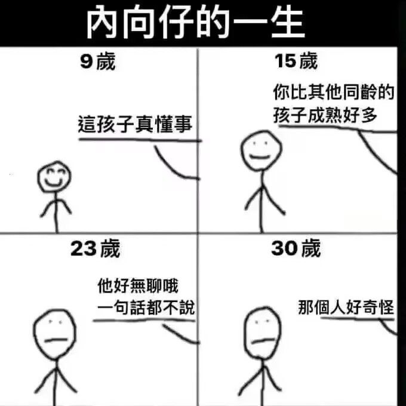

愿晚星照常升起🌈(keep4o)
@tadatsukiei
早熟的人往往晚熟，通常指的就是内向者。
太早学会了不问不动、对身边事物没兴趣，抗拒他人靠近，沉醉于自己的爱好。
早期，这会让他们显得冷静、有主见，但长大后需要独立做事时，往往缺乏变通，或者过于天真。一般来说“早熟”是由童年监护人缺位导致的，也可以说是无助缺爱。
当然这不是说内向是坏事，只是早熟者的表征通常是内向而已。

沐安ねこ
@show5560
🥲 https://t.co/mEOIOgh5ig